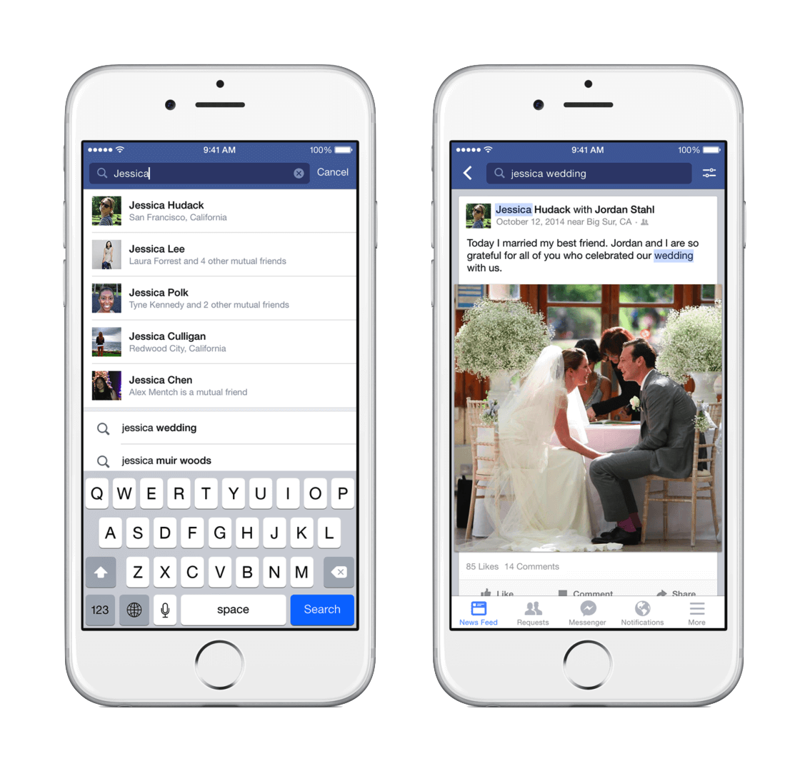

Worked directly with Mark on Facebook’s ground-breaking experiment, Graph Search, then led its evolution with a team I built from the ground up.
When I joined the design team at Facebook in 2011, users could only search for pages by name. It was the fastest way to navigate the massive platform, but Facebook wasn’t just a network of documents like the web. For its 1 billion daily active users, it had become a rich graph of connections reflecting their world.
Example Graph Connections…
[User] — friendWith —▶︎ [User]
[User] — likes ——————▶︎ [Page]
[User] — taggedIn ———▶︎ [Photo]
On January 15th, 2013 Facebook invited the press to an event at their new headquarters in Menlo Park. The presentation hall was packed with reporters snapping photos and live-blogging the opening moments.
The lights dimmed and a video played…
Teaser video, 2013
When the lights came back on, Mark stood at the podium and announced Graph Search. A new type of search engine that used structured queries and natural language processing (NLP) to help users traverse their graph connections to discover new music, a fellow adventurer, or just all the photos they’ve liked.
With firsts like a privacy-aware index, NLP parsing engine, as well as personalized autocompletions and search snippets, it was one of the most technically ambitious projects the young company had yet undertaken.
As Product Designer, I began working directly with Mark and other key executives in March of 2012. Mark called Search Facebook’s Third Pillar—as important to the company’s future as News Feed and Timeline. I took it from concept to launch in nine months, generating seven patents along the way.
Team Interviews, 2013
“ There are a few pillars of the Facebook ecosystem… Graph Search is going to be another…”
Mark Zuckerberg
Despite its innovative approach, adoption was low. Even the most advanced NLP of the day couldn’t handle user input outside of a recognized set. This put the burden on users to remember specific phrasings or else face frustration. In practice, users clearly preferred the simplicity of keywords to structured queries.
As we learned these hard lessons, we were simultaneously working to massively expand search’s capabilities. Every day in News Feed, billions of important posts would disappear beneath a continual stream of fresh content. Facebook offered no way for users to search for the most important posts they remembered seeing.
 Post Search, 2014
Indexing trillions of posts in a privacy aware index was an incredible infra challenge, but the functionality provided the perfect opportunity to transition Facebook search away from structured grammar to a simpler keyword model.
As Design Lead, I grew the team to 11 exceptional product designers and built strong partnerships with UX research to drive the design philosophy and align on a new direction for Facebook search.
Through exhaustive testing and iteration, the team balanced navigational and keyword intent in a simple typeahead experience that helped searchers get what they wanted fast without having to think about it.
The new result design system made it possible to flexibly rank top results for each type in a single view. For more challenging searches, tabs across the top filter results to a particular type.
The result of these efforts was a remarkably simplified and predictable search experience that still performs well years on. I’m proud of where we landed, but I do enjoy coming back from time to time to see if Graph Search support is still there, silently running beneath the hood. Last I checked, “My friends who live in [city]” still worked.